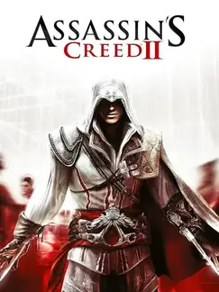

 |
|
| Tiempo de juego | 1m 14s |
| Última actividad | 16/1/2026 11:33:29 |
| Añadido | 21/9/2025 14:57:24 |
| Modificado | 3/12/2025 11:51:45 |
| Estado de finalización | Jugado |
| Librería | Playnite |
| Fuente | |
| Plataforma | PC (Windows) |
| Fecha de lanzamiento | 15/11/2016 |
| Puntuación de la Comunidad | 73 |
| Puntuación de la Crítica | |
| Puntuación de usuario | |
| Género | Adventure |
| Desarrollador | Ubisoft Montreal Virtuos |
| Editor | Ubisoft Entertainment |
| Característica | Single Player |
| Enlaces | 🌟Remaster |
| Tag | Voz y Texto en Español |
Si el primer Assassin's Creed fue una promesa, esta secuela fue la obra maestra que la cumplió con creces y la superó. Assassin's Creed II no es solo el mejor juego de la saga de Ezio; es el pilar sobre el que se construyó toda la franquicia y, para muchísimimos, el punto más alto que jamás alcanzó.
Acá conocemos a Ezio Auditore da Firenze, y qué personaje. Dejamos atrás al estoico Altaïr para meternos en la piel de un joven noble italiano, carismático y fanfarrón, y lo acompañamos en un viaje de décadas que lo transforma en un Maestro Asesino. Es una historia de venganza, familia y deber que te atrapa de principio a fin.
Y el escenario... mamita, el escenario. El Renacimiento italiano está recreado con un nivel de detalle y una belleza que te caes de culo. Trepar por el Duomo de Florencia, navegar por los canales de Venecia, explorar las colinas de la Toscana... el mundo abierto es un personaje más, lleno de vida, arte y secretos por descubrir.
A nivel jugable, fue una revolución total. Se fue la repetición del primero y entró la variedad: un sistema económico, la posibilidad de comprar y mejorar armas y armaduras, las misiones secundarias que eran un vicio, y las Tumbas de Asesino, unos niveles de plataformeo y puzzles que eran una genialidad. Todo se sentía más fluido, más profundo y muchísimo más divertido.
El legado de Assassin's Creed II es inmenso. Es el molde, la piedra fundamental sobre la que se construyó no solo el resto de la saga, sino una buena parte de los juegos de mundo abierto que vinieron después. Tenés que jugarlo para entender el ADN de una de las franquicias más importantes, para vivir una de las mejores historias de redención de los videojuegos y para experimentar un mundo abierto perfectamente equilibrado, antes de que el género se llenara de mapas con mil íconos inútiles. Es, sencillamente, historia pura.